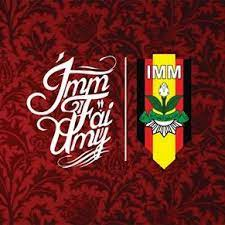
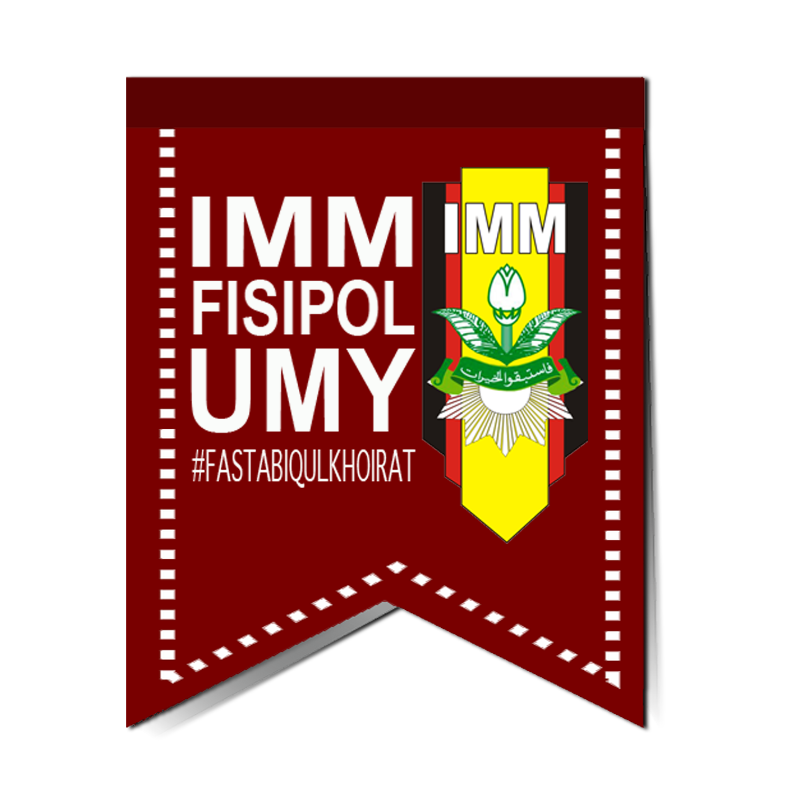
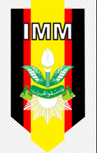

Deskripsi:
Ikatan Mahasiswa Muhammadiyah
Berjuang di Muhammadiyah itu berat, ragu atau bimbang, lebih baik pulang.
Jend. Soedirman
Quotes IMM FT
"Jadikanlah IMM sebagai organisasi untuk belajar, untuk beramal, dan untuk mengabdi." - Djazman Al-Kindi
"Manusia menjadi budak ilmu dan teknologi yang diciptakannya sendiri." - Djazman Al-Kindi
Demis IMM FT
Tutors
Demis IMM FT yang bisa menjadi contoh dalam organisasi IMM FT
Tio
ketum IMM FT
Nuruddin
Kabid Kader
Gigih
Kabid Organ
Dzar
Kabid Hikmah
IMM Fakultas lain
Partners


